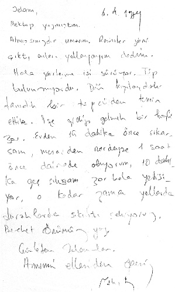

6.4.1980
Sevgili dostum,
Mektubuna sevindim. Sizleri edebiyat çalışmaları açısından böyle enerji dolu görmek, bizleri de harekete geçiriyor, bize gayret veriyor.
Ciddi, tutarlı, soğukkanlı incelemelerinizi bekliyorum.
Mektubunu Rasim de okumuştu. Hikâye özel sayısı ile ilgili olarak o da birkaç satır yazıyor.
Senin daima uzun uzun mektuplarını beklerim. Onlara her zaman layıkı vechile cevap veremeyebilirim. Cidden ziyade doluyum. Umarım anlayış gösterirsin.
Yaşamak’la ilgili yazın gelecek sayıya girdi. O yazıda iki kelimeye Rasim’le birlikte müdahale ettik. Biri “hicret etmek” ikincisi “kıble”. Onları kanaatimizce zorlamayla kullanmışsın. Geçen mektubumda anlatmak istediklerimden biri de buydu. O kelimelere sığınarak hazırdaki okuyucuya kolayca yaklaşmak eğilimin ortaya çıkıyor. Daha açık söyliyeyim, yazının tümünü alıp götürüyor. Yazı, romantikleşiyor, ama marazi bir şekilde. Eleştiri değerini yitiriyor. Eleştiri ve incelemede sadece bizim cemaatin tatminini düşünmekten kurtulmalı. Bunları yinelemekte yarar görüyorum. Bu yazdıklarım senin için çok önemli. Zira mektubunu ve yazını Rasim’le okurken onun söylediği gibi, sende “eleştirmenlik” mevcut. Bunu kısırlaştırmana gönlümüz razı değil.
İşte böyle.
Gözlerinden öperim.
Cahit Zarifoğlu.[10]
